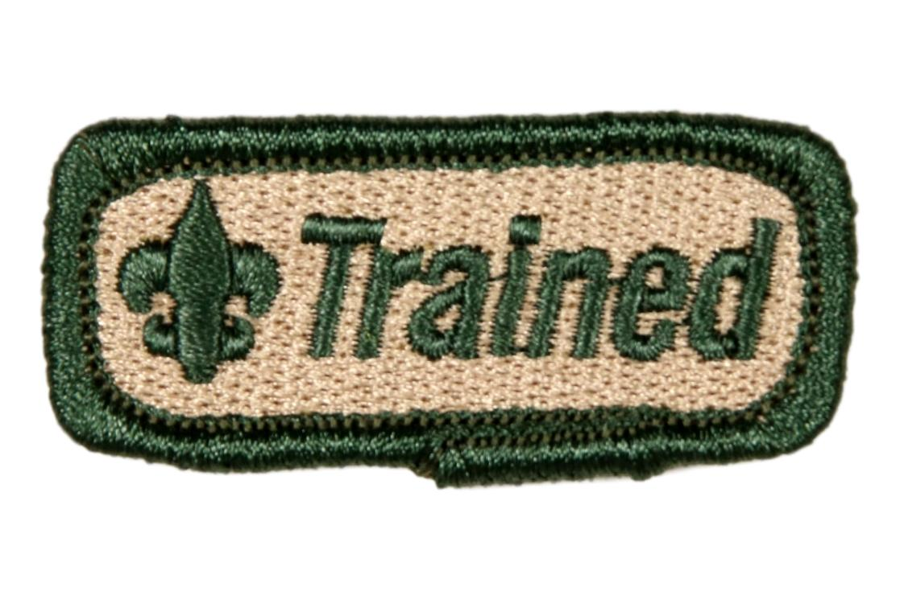

Welcome Den Leader!

Here are your First Steps
- Fill out an Adult Application
- And have it signed by your Pack's Chartered Organization Representative
- Complete Youth Protection Training
- Create an account on my.scouting.org and sign in
- Click the big red button on the right side of the home page
- Once complete, send certificate along with signed adult application to Gamehaven Council
- Complete 45-minute "Before your First Meeting" training
- Select "Den Leader Training"
- Click on "Enroll
- Click "Visit" on the second module, "Before Your First Meeting"
- Click "Start" on "CS-19 Welcome"
- Hold your First Den Meeting
- Complete 45-minute "Before Your First Outdoor Activity" Training
- Select "Den Leader Training"
- Click "Visit" on the third module, "Before your First Outdoor Activity"
- Click "Start" on "CS-19 Preparing Families for Outdoor Adventures"
- Hold your Second Den Meeting
- Complete 30-minute "Earning your Trained Strip" training
- Select "Den Leader Training
- Click "Visit" on the first module, "Earning your Trained Strip"
- Click "Start" on "CS-19 Involving Adults in Cub Scouting"
- Complete a Den Annual Plan
- Fit all required adventures into your annual calendar
- Fill empty spaces with elective adventures
- Register for Basic Adult Leader Outdoor Orientation
- Email completed documents (below) to brady.geary@scouting.org to receive a free "Trained" patch!
- Certificate of Completion for Den Leader Training
- Den Annual Plan
